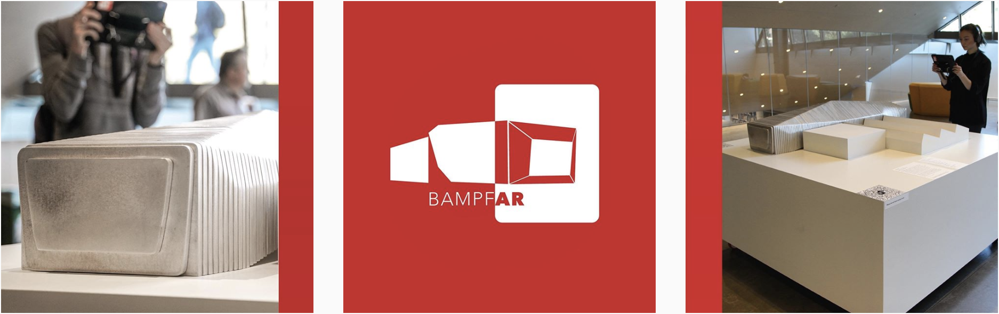
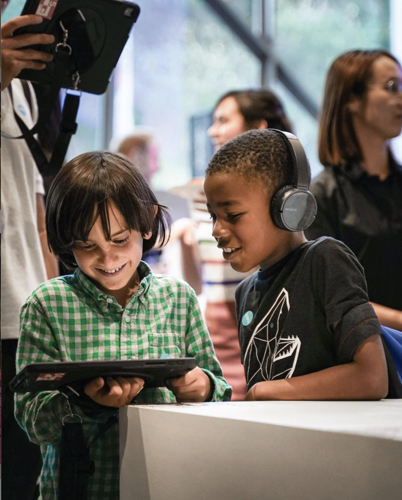
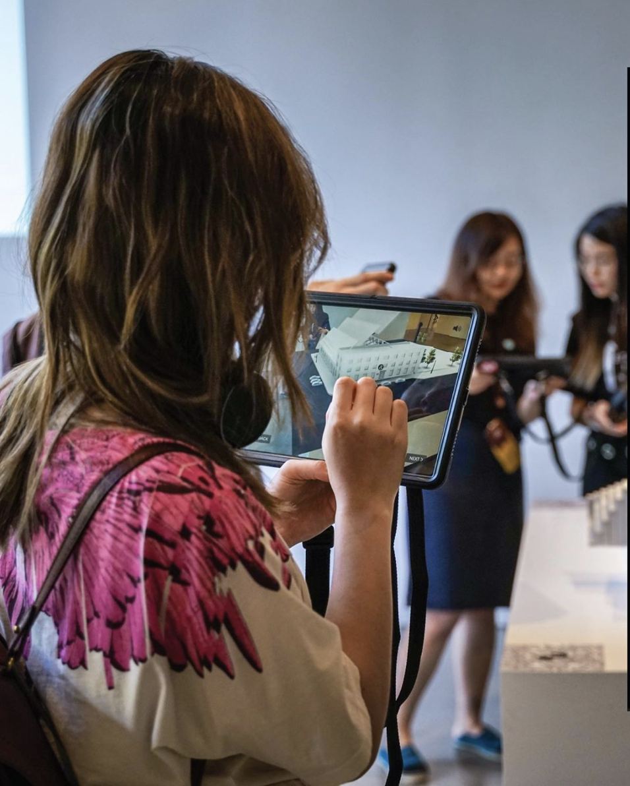
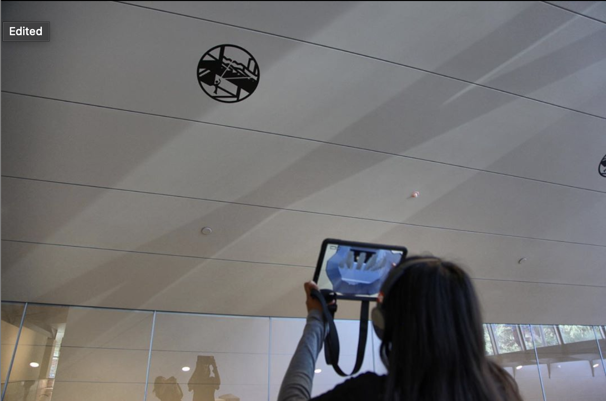

<!DOCTYPE html><html lang="en"><head><meta charset="utf-8"><meta name="viewport" content="width=device-width, initial-scale=1.0"><title>cdste</title><link rel="stylesheet" type="text/css" href="//fonts.googleapis.com/css?family=Ubuntu+Mono|Lato"><link rel="stylesheet" href="../../res/main.css"><link rel="stylesheet" href="../../res/grid.css"><link rel="stylesheet" href="../../res/project.css"></head></html><body><div class="project-page"><div class="body_div"><div class="vertical_center"><a href="../../index.html"><div id="site_title">$ cd Ste<div class="box blink"> </div></div></a><div class="project-title">BAMPFA Augmented Reality</div><div class="role"><span class="bold">Role:</span>ideation, research, engineering, prototyping, design</div><div class="doc-link"><a href="https://xrlab.berkeley.edu/research/bampfa-ar-argmented-time/" target="_blank">Lab Project Page</a><br><a href="https://bampfa.org/program/bampfa-ar-augmented-time" target="_blank">Museum Project Page</a></div><div class="blurb">BAMPFA AR—Augmented Time explores new modes of narrative and storytelling
using augmented reality as a medium. The project unfolds the history of the new BAMPFA,
from the building’s inauguration in 1940 as the university printing press,
to an abandoned structure covered with graffiti by local artists, to its transformation
into a contemporary cultural hub.<br><br><div class="bold">Press<a href="https://archpaper.com/2020/01/luisa-caldas-uses-ar-to-let-the-dsr-designed-bampfa-tell-its-own-story/" target="_blank" class="sub-link">Archpaper Article</a><a href="https://www.dailycal.org/2019/12/12/uc-berkeley-professor-luisa-caldas-uses-augmented-reality-to-reveal-untold-history-unheard-voices-at-bampfa/" target="_blank" class="sub-link">DailyCal Article</a></div></div><div data-colcade="columns: .grid-col, items: .grid-item" class="grid"><div class="grid-col grid-col--1"></div><div class="grid-col grid-col--2"></div><div class="grid-col grid-col--3"></div><div class="grid-item"><div class="grid-img"></div></div><div class="grid-item"><div class="grid-img"></div></div><div class="grid-item"><div class="grid-img"></div></div></div><iframe width="560" height="315" src="https://xrlab.berkeley.edu/research/bampfa-ar-argmented-time/fvp/#fvp_BampfAR_Video_sm" frameborder="0" allow="accelerometer; autoplay; encrypted-media; gyroscope; picture-in-picture" allowfullscreen="allowfullscreen"></iframe></div></div></div><script src="https://ajax.googleapis.com/ajax/libs/jquery/1.8.3/jquery.min.js"></script><script src="https://unpkg.com/colcade@0/colcade.js"></script><script src="../../res/app.js"></script></body>